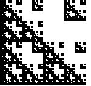
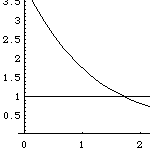
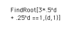

|  | First, here is an example of a self-similar fractal whose dimension we can't compute from the similarity dimension formula. |
| Derivation of the Moran equation. We re-express the similarity dimension formula in a way that allows us to compute dimensions of fractals made of different size pieces. | |
|  | Though it may not be obvious from its form, the Moran equation has a unique solution. The proof of this uses a small amount of calculus. |
|  | Here are some examples of solving the Moran equation. We give a numerical approach that always works, and an abstract approach that works for a special class of fractals. |
| Exercises in computing the similarity dimension using the Moran equation. |